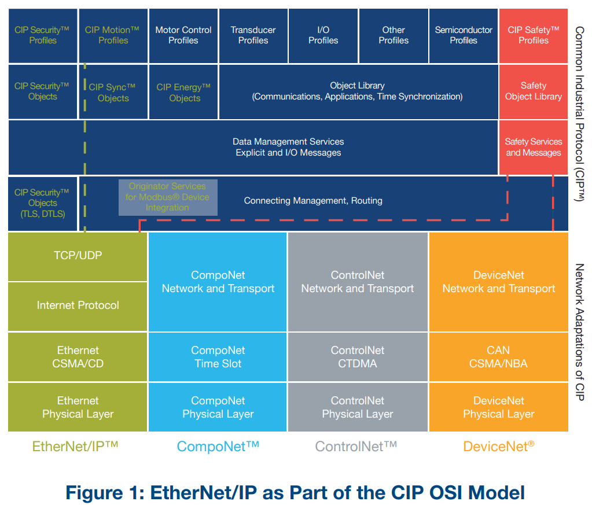
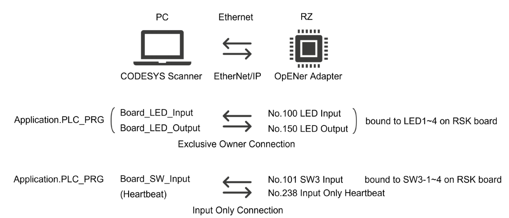
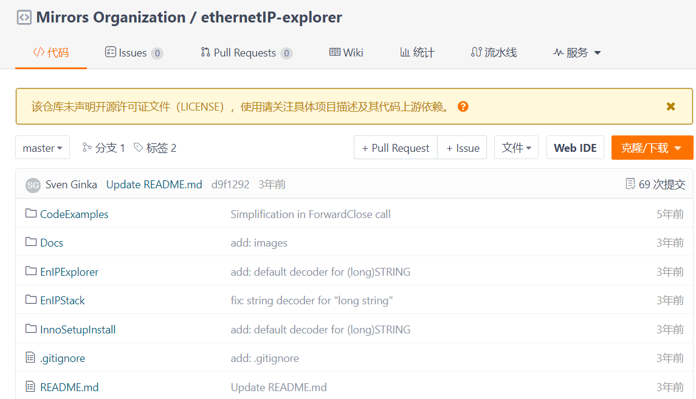
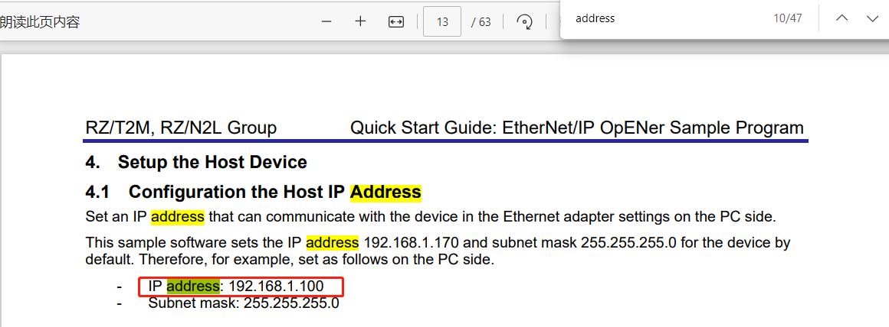
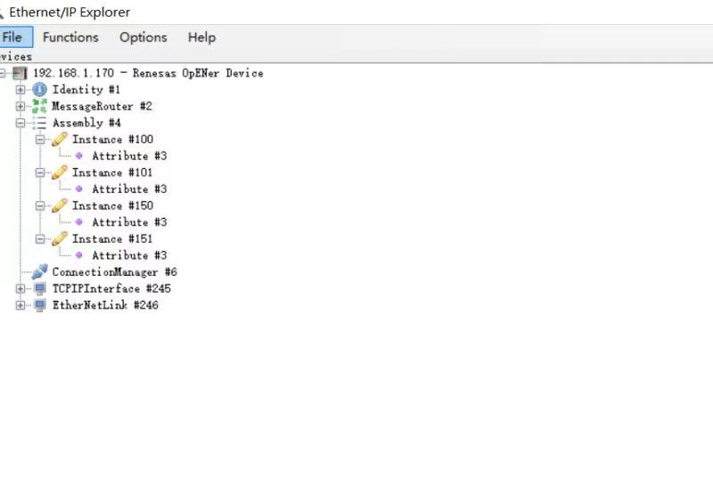
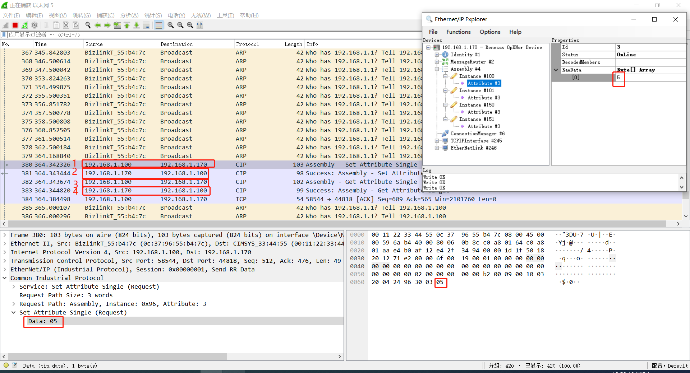
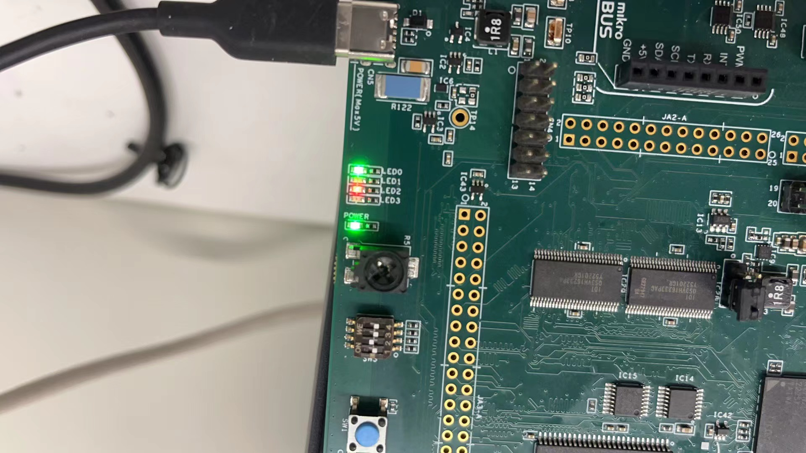

瑞萨RZN2L工业以太网MPU视频笔记
五、瑞萨RZN2L Ethernet/IP通讯
一、概述/目的
本节通过使用CODESYS&SetupEnIPExplorer_1.2与RZN2L开发板建立Ethernet/IP通讯，展示IO通讯功能，来验证RZN2L开发板的软硬件能力。其次对于初学者来说能少走弯路。
RZN2L_OpENer_RSK_rev0101：例程软件包
二、软/硬件要求
| 项目 | 功能描述 | 说明 |
|---|---|---|
| 开发板 | RZ/N2L RSK Board | EIP从站 |
| IDE | e² studio 2023-07 (RZN2L_FSP_Packs_v1.2.0) | 编译软件并烧录到开发板 |
| EIP主站软件 | CODESYS SetupEnIPExplorer_1.2 |
13.5.15.10 32-bit SetupEnIPExplorer_1.2 |
| EIP软件包 | RZN2L_OpENer_RSK_rev0101 | 文档、例程 |
| 网卡 | mac+phy+rj45 | 同Ethernet |
RZ/T2M, RZ/N2L Quick Start Guide: EtherNet/IP OpENer Sample Program
PUB00138R7_Tech-Series-EtherNetIP.pdf
三、EtherNet/IP™与ODVA
3.1 ODVA官方资料
https://www.odva.org/technology-standards/key-technologies/ethernet-ip/
https://www.odva.org/wp-content/uploads/2021/05/PUB00138R7_Tech-Series-EtherNetIP.pdf
https://www.odva.org/technology-standards/document-library/
3.1.1 CIP OSI Model

3.1.2 The Physical Layer
3.1.3 The Data Link Layer

3.1.4 The Network and Transport Layers

四、CODESYS(主)+rzn2l opener RSK(从)
RZ/T2M, RZ/N2L Group Quick Start Guide: EtherNet/IP OpENer Sample Program
4.1 硬件rzn2l RSK开发板
- rzn2l(sw-3)+phy+rj45
4.2 软件RZN2L_OpENer_RSK_rev0101
- EtherNet/IP OpENer
- FreeRTOS
- lwIP
4.3 CODESYS Software
version 3.5.15.10 32-bit
| Name | Description | Note |
|---|---|---|
| CODESYS V3 | IDE | |
| CODESYS Gateway V3 | Software Gateway | This may be already started by Windows Start Up Process. |
| CODESYS Control Win V3 | Software PLC | This may be already started by Windows Start Up Process. |
4.4 系统框图

4.5 附录
- 第三方软件版本
https://github.com/EIPStackGroup/OpENer
Git comment ID used in this sample software: 05cdd03
https://aws.amazon.com/freertos/
https://github.com/aws/amazon-freertos
Git comment ID used in this sample software: a038063
https://savannah.nongnu.org/projects/lwip/
https://github.com/lwip-tcpip/lwip
Git comment ID used in this sample software: 79cd89f - Assembly Objects and I/O Connections
- Support CIP Object Classes
- DLR
五、EnIPExplorer(主)+rzn2l opener RSK(从)
5.1 主站软件
https://gitee.com/mirrors-org/ethernetIP-explorer

5.2 SetupEnIPExplorer_1.2.exe安装与运行
5.3 测试过程
5.3.1 主站IP地址

5.3.2 EnIPExplorer增加实例

5.3.3 wireshark抓包分析

5.3.4 实测效果
